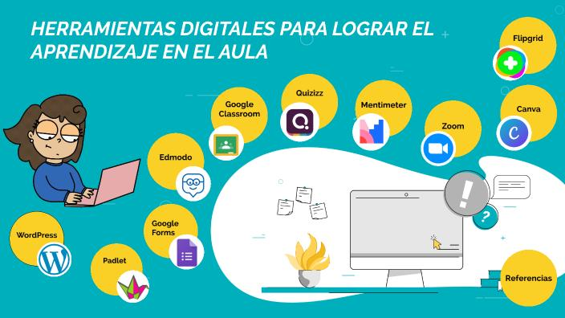

Texto
💻 Herramientas digitales.
Durante el desarrollo del proyecto, el alumnado utilizará diferentes herramientas digitales que favorecerán la creatividad, la colaboración y la competencia digital.
🎨 Canva
Canva se utilizará para:
✅ crear infografías,
✅ diseñar carteles digitales,
✅ elaborar presentaciones visuales,
✅ y organizar información de forma creativa.
Esta herramienta permitirá desarrollar la creatividad y la competencia digital del alumnado mediante diseños visuales atractivos y accesibles.
✨ Genially
Genially se utilizará para:
✅ crear presentaciones interactivas,
✅ realizar contenidos dinámicos,
✅ y elaborar recursos visuales motivadores.
El alumnado podrá comunicar sus ideas de manera innovadora e interactiva.
📌 Padlet
Padlet se utilizará para:
✅ compartir ideas y recursos,
✅ realizar lluvias de ideas,
✅ organizar información colaborativa,
✅ y fomentar la participación activa del alumnado.
📂 Google Drive
Google Drive facilitará:
✅ el trabajo cooperativo,
✅ el almacenamiento de documentos,
✅ la edición compartida,
✅ y la organización del proyecto.
🌍 Uso responsable de las tecnologías digitales
El alumnado utilizará las herramientas digitales de manera:
✅ segura,
✅ responsable,
✅ crítica,
✅ inclusiva
y respetando la privacidad y los derechos digitales.
